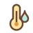
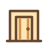
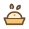
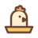
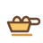

Обзор
overview.svg
Размеры:
Единые округлые контуры, тёплые оттенки и небольшие цветовые акценты. Ниже показаны размер для карточки и уменьшенные варианты для меню.
overview.svg

climate.svg

ventilation.svg

door.svg

feeding.svg

light.svg
alerts.svg

registers.svg
settings.svg · выбран вариант с ползунками

update.svg · выбран файл со стрелкой
По два варианта для кормления, настроек и обновления.
feeding-alt-1.svg

feeding-alt-2.svg

settings-alt-1.svg
settings-alt-2.svg

update-alt-1.svg
update-alt-2.svg
Совок с зерном, бункер и зерно с часами.

feeding-alt-3.svg
feeding-alt-4.svg
feeding-alt-5.svg
Значки панели состояния.
clock.svg
wifi.svg

mqtt.svg
Это самостоятельный пример: значки пока не подключены к интерфейсу прошивки или шаблона. Каждый SVG лежит рядом с этой страницей и масштабируется без потери качества.
← К солнечному шаблону